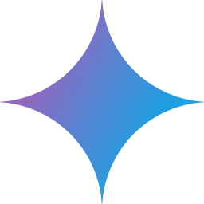

Creative work is scattered across a dozen tools
Tool sprawl
A chat assistant to plan, a separate app to generate, another to edit. Ten tabs for one idea.
Nothing transfers
Prompts, references, and revisions stay locked inside each tool. Context is lost at every handoff.
Model roulette
A new best model ships every month. Picking and switching is manual, and usually wrong.
A large market, still early in its shift to AI
Generative AI creative-tools market by 2030
Digital creators producing visual work worldwide
Annual growth in AI-assisted image generation
Two surfaces, one system
Pixcel Chat
A conversational agent that returns rich, interactive UI — charts, tables, image drafts — inline in the thread.
Pixcel Studio
A full-screen creation workspace — canvas, frame deck, inspector, and an AI prompt bar — one click from any image in chat.
An artisan you commission, not a panel of sliders
You describe the piece. The agent runs the Statue Method live on a drafting-table char-map — and you steer it anytime.
Model-agnostic by design
One prompt surface, routed to the best model for the job. We add new providers as they ship — and get stronger every time the frontier moves.

GeminiWhy now
Models cleared the bar
Image and reasoning models are finally good enough to trust with real production work.
Creators exploded
A generation of independent makers needs professional output without a studio pipeline.
Tooling stayed split
No one has unified the assistant and the studio. The category leader hasn't been named yet.
Early signal, compounding fast
Active creators on the platform
Assets generated to date
Month-over-month usage growth
Week-4 retention on paid tier
How we make money
Usage credits
Pay-as-you-go credits layered over every model. Margin lives in smart routing, not raw generation.
Team subscriptions
Seat-based plans for studios and agencies — shared assets, brand systems, and collaboration.